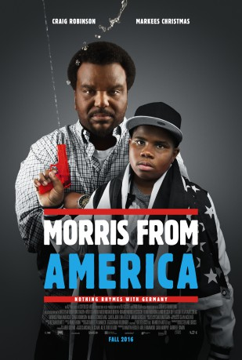

#6229 Morris aus Amerika
 
 IMDB-Wertung: 6.2 / 10
IMDB-Wertung: 6.2 / 10  Metascore: 0
Metascore: 0 
Morris is a 13-year-old African-American who moves to Heidelberg with his dad, who coaches professional soccer. The film explores Morris's attempts to fit in with German kids. He falls for a girl at a youth club and she encourages him to open up a little and share his rapping.
Jahr: 2016
Dauer: 90 Minuten
FSK: 12
Land: Deutschland Studio: Farbfilm-VerleihTonspuren:
Untertitel:
Auflösung: 1080p (1920x1040) Größe: 7628 MB
Genre: Drama, Komödie, Liebe
Regisseur: Chad Hartigan
Drehbuch: Bouli Lanners
Soundtrack:
Darsteller:
- Markees Christmas als Morris Gentry
 Craig Robinson als Curtis Gentry
Craig Robinson als Curtis Gentry- Carla Juri als Inka
- Patrick Güldenberg als Sven
- Lina Keller als Katrin
 Eva Löbau als Katrin's Mother
Eva Löbau als Katrin's Mother Jakub Gierszal als Per
Jakub Gierszal als Per- Levin Henning als Bastian
- Leon Badenhop als Rainer
- Marie Löschhorn als Birgit
- Josephine Becker als Nadine
- Roger Ditter als Alex - Soccer Trainer #1
- Florian Von Stockum als Jakob - Soccer Trainer #2
- Nora Borchert als Ballet Dancer
- Diana Ionescu als Ballet Dancer
- Anna Sodan als Ballet Dancer
- Anabel Möbius als Industrial Party Girl
- Lukas Ritter als Gotta Pee Real Bad Guy
- Thorsten Wenning als Youth Center Adult
- Liv Scharbatke als Phone Sex Operator
- Josephine Fabian als Phone Sex Woman
- Manuel Hafner als Franz
- Hugo Manuel als Chad Valley
- Kai Michael Müller als Olaf
Datei: X:\2016(G-M)\Morris aus Amerika (2016, FSK12, 1920x1040).mkv seit 18.05.2017
Festplatte: HD 2016(A-Z)
 Es gibt insgesamt 164 Filme in der Gruppe '2016(G-M)'
Es gibt insgesamt 164 Filme in der Gruppe '2016(G-M)'